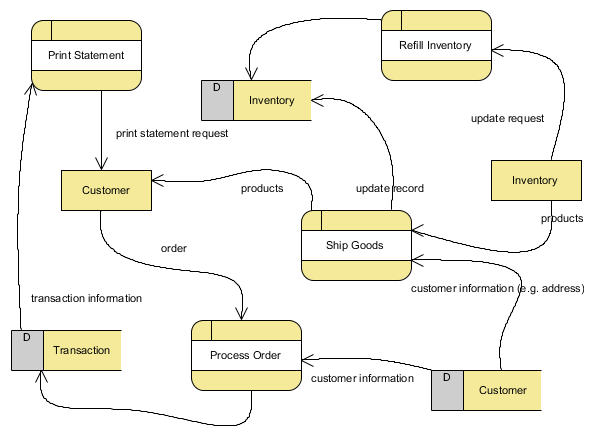

What is it?
Computational thinking is a problem solving approach that borrows techniques from computer science, notably abstraction, problem decomposition and the development of algorithms.
Computational thinking can be applied to a wide variety of problems and not just the development of computer systems.
The four cornerstones of Computational Thinking
Decomposition is where a complex problem is broken down into smaller parts which makes it a lot more manageable. These smaller parts are easier to work and solve.
Pattern Recognition is a technique that looks at similarities between and within smaller problems usually problems that have been decomposed. It works by looking at several problems and then finding a pattern between them this pattern allows the next problem to be predicted.
Abstraction - is a technique which involves focusing on the needed information disregarding the irrelevant detail. The irrelevant, complex detail is suppressed below the needed information’s level. Abstraction allows a person to interact with an interface and not be surrounded with unnecessary items.
Algorithms are a series of step-by-step calculations that are needed to solve a problem.
Decomposition
Decomposition is the breaking down of a problem into smaller parts that are easier to solve. These smaller parts can be solved recursively.
Solving something recursively is where you run it again and again until that part of the problem is solved.
Different ways to use Decomposition
Top down design is an approach that led to the widespread use of modular programming. Modular programming is where the program functionality is separated into independent modules which contains everything that is needed to execute that aspect of functionality. The top-down design gets an overall design of a program and splits a sub-problem into smaller components like a hierarchical tree-like structure. A disadvantage of this approach is that it assumes that you know whole solution to the problem in advance.
{kind=link}
Using alternative pathways is another approach, where parallel processes are demonstrated with the use of alternate pathways.
Data flow diagram could be used to show how data is passed in a system. This is useful to show how the major components and activities are set out in a system before going into detail of the algorithm development.
{kind=link}
Structured Programming
Structured programming is a programming paradigm (way of programming) where functions/procedures are designed to carry out a limited set of jobs - this improves clarity, readability and development time of a computer program.
Structured programming came about after Edsgar Dijkstra (creator of the Dijkstra's algorithm) opposed how the early programs had no rules on how to lay them out, in particular Dijkstra opposed the GOTO statement (this statement transfers control unconditionally to some other point in a program) because he thought that it made program’s harder to read and maintain.
Three of Programming Constructs
Structured programming became popular because of the discovery of how any computable function can be carried out by using only three types of programming constructs
Sequence is where you execute one statement/subprogram after another.
Selection is where you branch of to a different place in a program according to the value of the boolean expression.
Iteration is where you repeat a section of code until a boolean expression is true.
Object-Oriented Programming
Object oriented programming is a programming paradigm that is based around objects. It breaks down problems/ functionality at the same time because an object, which is based on a class (template that contains attributes/data) and methods (code for that specific object), can be isolated from others - which decreases the amount of errors due to interface and allows you to reuse the object for similar problems.
Structured programming uses decomposition because it breaks a process down into well- defined steps.
Algorithms
Algorithms are a series of step-by-step calculations that are needed to solve a problem. You use algorithms by getting values/value as the input and then apply the algorithm to it to get an output values/value. Algorithms need data to work.
Algorithms needs to be created using decomposition to break the problem into smaller parts which will help to plan out the solution/algorithm which will help to create the program.
After an algorithm has been created a programmer should be able to translate the algorithm into code.
Rules to produce an efficient working algorithm
Algorithms must describe what they are meant to do otherwise it could lead to errors due to vagueness. This is because computers don’t understand vagueness .
Algorithms must end because if it doesn’t finish you don’t get a result which is why you need to remember to put an end condition in a recursive algorithm.
Algorithms must be correct because if it isn’t the end result won’t be correct.
Algorithms must work with any instance of the same problem so that the computer can work with similar data sets which would make the process quicker.